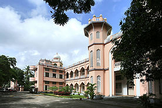

TKM COLLEGE OF ENGINEERING
KOLLAM-5

The Thangal Kunju Musaliar College of Engineering, commonly known as TKMCE,
is the first government-aided engineering institution in the Indian state of
Kerala inaugurated on 3 July 1958. It is the first Government aided engineering
college in Kerala. The institution is affliated to KTU.